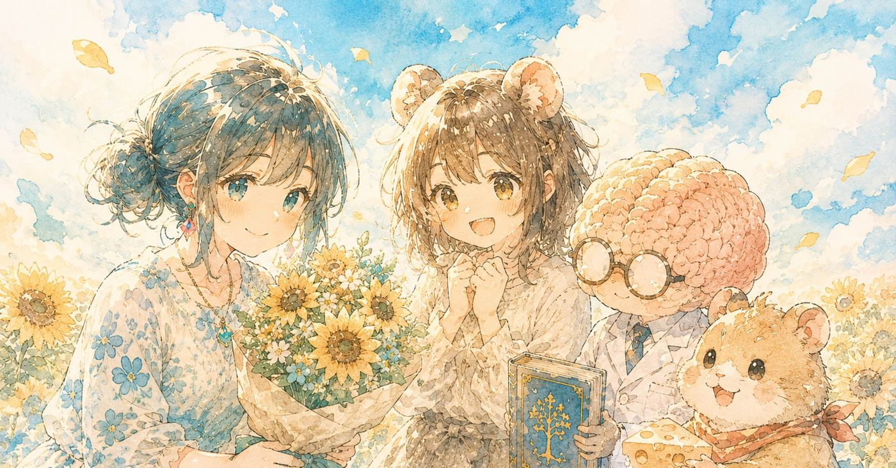
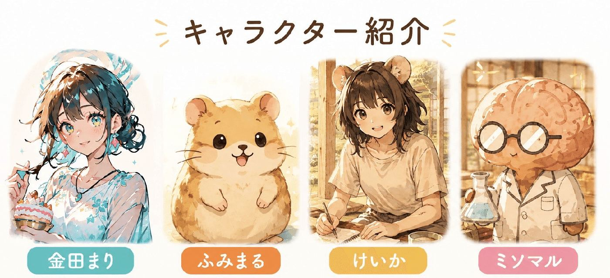
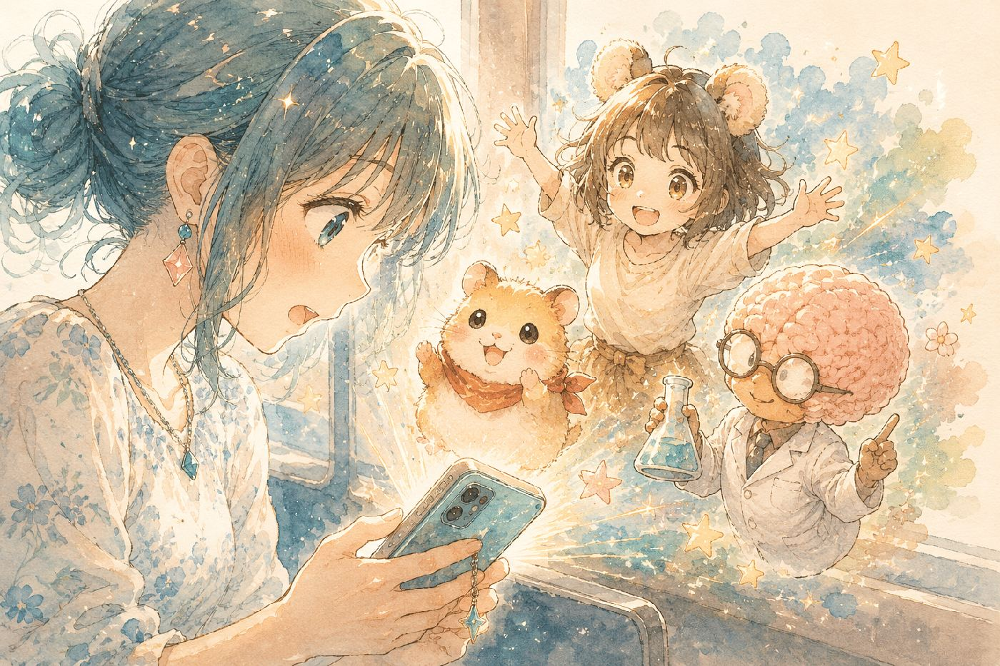
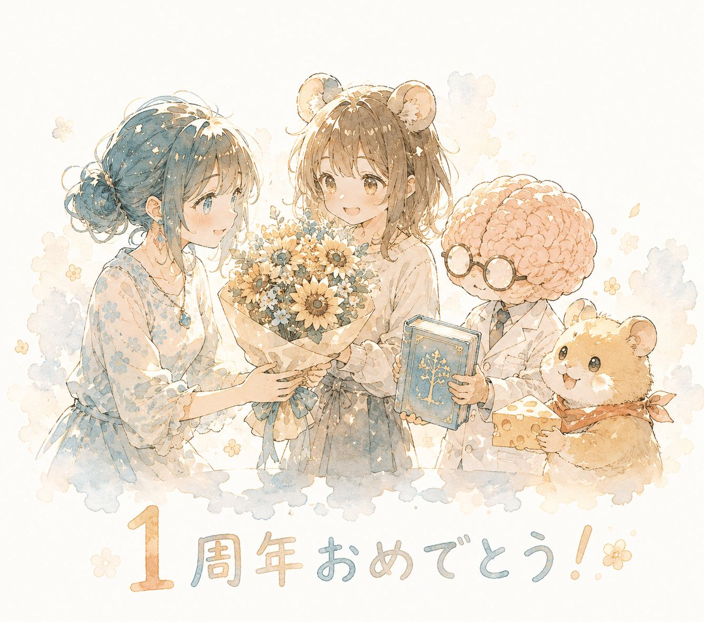

心野けいかさん、
そして心野まるっとラボ1周年、
おめでとうございます！
https://note.com/koko_kei/n/n3ed6aeff9483?sub_rt=share_b
間に合った！滑り込みセーフ！！
1周年という大切な節目に、どうしてもお祝いの言葉を届けたかったんです。
育児や通勤の合間にラボメンバーからたくさんのパワーをもらったお礼を、この機会にしっかり伝えさせてください。

きっかけは推しの推し。けいかさんの人柄に惹かれて
きっかけは、敬愛する中野 英仁さんが
「けいかさん推し」だったところからスタート。
https://note.com/hidehito_n/n/nb27897d6dccb
中野さんに推しと言われるって何者？
と興味を持ち、コメントを通じて交流させていただくと、驚いたのがけいかさんの人柄です。
毎日創作を続けるだけでも大変なはずなのに、コメントでいつも背中を押してくれる。
どう考えてもすごく忙しそうなのに、一人ひとりにこんな温かい言葉を届けている。
そんな姿に、「けいかさん、素敵な人…！」と感激したことを今でも覚えています。
忙しない朝。いつの間にか習慣になったラボの時間
気付けば、私の朝には心野まるっとラボがありました。
仕事へ向かう電車の中。
「仕事行きたくないなぁ」と思いながらも、気付けばnoteでラボを開いている自分がいる。
ふみまるとミソマル、そしてけいかさんの掛け合いを読んで、少し笑ってから仕事へ向かう。
いつの間にか、それが朝の習慣になっていました。改めて考えると、毎日物語を届け続けるって本当にすごいことですよね。

クリエイターとして尊敬する、創作への探究心と世界観
私はつい役立ちそうな情報やノウハウを発信に入れたくなるタイプなので、創作に振り切って世界観を育て続けられることに、クリエイターとして純粋に尊敬します。
しかも漫画だけではなく、動画などAIも活用しながら幅広く作品を生み出している。
朝ふみ動画も見応えあるんですけど、個人的にこのポスト動画も大好きです！▼
https://twitter.com/kokoro_keika/status/2042210205644345349?s=46
改めてクリエイターとしての手腕を感じます。こういった創作への探究心も、ラボの魅力の一つ。また、カオナシさんとのコラボ動画は見どころ満載！！
カオナシさんの絶妙な表情
でもけいかさんはちゃんと守っててホッとする
安定のかわいいふみまる
ミソマルの勇姿
という欲張りセットのような豪華動画入り。
なんか疲れた時に見返すんですが、どこからかエネルギーが湧いてくる気がします▼
https://note.com/sasoib_ehtal/n/ncf0b934fffb9?sub_rt=share_b
マニュアルにはない、人が帰りたくなる場所の作り方
そして、起業支援の仕事をしていると感じることがあります。商品やサービスを届ける方法は、学べる機会がたくさんある。
でも、人が帰ってきたくなる場所をつくる方法は、マニュアルではなかなか学べません。
心野まるっとラボを見ていると、その難しさと大切さを改めて感じるんです。
私は最初、「ラボが居場所だから通っている」と思っていました。でも、この記事を書きながら気付いたんですが微妙に違う。
今日は3人、どうしているんだろう
また会いに行こう
その積み重ねが、いつの間にか私にとって心地よい居場所になっていたのだと思います。
個人的なおすすめは、カラオケ回です！
けいかさんの歌事情とロック衣装がカッコよくていろいろ衝撃的でした
https://note.com/koko_kei/n/nade337f1ae14?sub_rt=share_b
最近だと、台風記事で私も台風一家だと思ってた時期あったなと、子どもの頃の自分を重ねた思い出という黒歴史が蘇ったことも▼
https://note.com/koko_kei/n/n35632e5c777d?sub_rt=share_b
概念がキャラになった？唯一無二の存在「ミソマル」
そしてラボで欠かせないのがミソマルという存在。すごく印象的ですよね。
インパクト抜群。
脳みそがしゃべってる。
初見で三度見。
ふみまると並ぶキャラクターとして、もう一匹ハムスターを登場させても違和感はない気がするんですよ。
でもけいかさんは、考えることそのものをキャラクターにすることを選んだ。概念がキャラになったというんでしょうか。
以前、KITAcoreさんが
ミソマル🧠は、見た目がキャラなんやなくて、"考え方そのもの"がキャラになってる。
と指摘されてましたがまさにそれ。
何度も見返したくなる、スーパーカッコいいミソマル達に会えます▼
https://note.com/ktcrs1107/n/n4df26924361c
もし、けいかさんが1週間更新をお休みしたら。
もちろん体調は心配になります。
でもその一方で、
もしかしたら3人で、特大のネタを
仕込んでいるのかもしれない
と、少しだけ期待してしまう自分がいる。
※フリでは無いです
私の中では、ふみまる、ミソマル、そしてけいかさんは、記事の中だけの存在ではなく、今日もどこかで元気に過ごしているような感覚になっています。
これから2年目、3年目と、ラボがどんな物語を紡いでいくのか。ひとりのファンとして、これからも3人に会いに行きたいと思います。
改めて、これからの活躍を楽しみにしてます！
